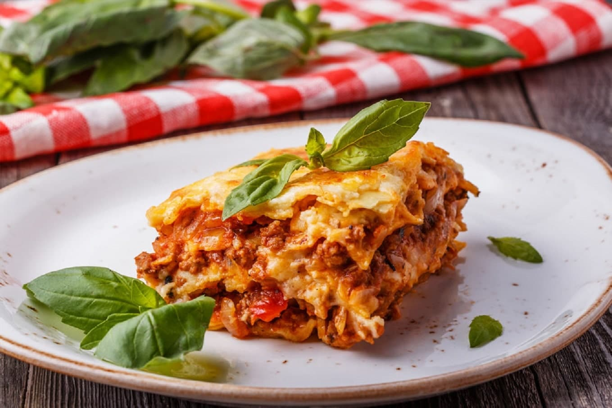

Feijoada Baiana
- Modo de Preparo
- 1 - Na véspera, em uma tigela, coloque a orelha e os pés de porco e cubra-os com água fria. Troque a água 4 vezes durante esse tempo.
- 2 - Em outra tigela, coloque a carne-seca e a costelinha de porco e cubra-as com água fria para dessalgar. Troque a água 4 vezes.
- 3 - No dia seguinte, coloque o feijão em uma tigela, cubra com água e reserve por 1 hora.
- 4 - Escorra a orelha, o pé de porco, a carne seca e a costelinha e coloque-os em uma panela de pressão cobertos com água fria. Tampe a panela e cozinhe por 15 minutos, contados a partir do início da pressão. Retire do fogo, aguarde sair todo o vapor e abra a panela. Escorra e reserve.
- 5 - Na mesma panela, aqueça o óleo e doure a cebola. Junte a linguiça, o paio, o lombo e refogue por mais 3 minutos. Junte o feijão escorrido, as carnes pré-cozidas reservadas e a laranja.
- 6 - Acrescente os cubos de caldo de bacon Arisco e água fervente. Tampe e cozinhe por 15 minutos, contados a partir do início da pressão.
- 7 - Retire do fogo, aguarde sair todo o vapor e abra a panela. Retire a laranja e leve novamente ao fogo. Cozinhe em fogo baixo, com a panela parcialmente tampada (sem a pressão), por mais 30 minutos ou até engrossar o caldo e os ingredientes estarem cozidos.
- 8 - Passe para uma travessa e sirva em seguida.

Frango Com Batata Frita E Legumes
- Modo de Preparo
- 1 - Com a quantidade que preferir de filé de peito de frango, tempere a gosto e deixe descansar na geladeira por pelo menos 2 horas.
- 2 - Com o frango ja temperado, jogue-o em uma frigideira quente e deixe dourar de ambos os lados.
- 3 - Separe o frango e com a mesma frigideira frite os legumes, pegando o sabor do frango até os legumes dourarem também.
- 4 - Quando já tiverem dourado, retire-os e deixe separado juntamente com o frango.
- 5 - Em uma panela alta e jogue 3 dedos de óleo e espere esquentar bem.
- 6 - Com o óleo já quente, jogue suas batatas e fique mexendo e virando elas até dourarem e ficarem crocantes.
- 7 - Depois que as batatas fritarem, separe-as em um recipiente com papel toalha para secar o óleo delas.
- 8 - Monte seu prato e aprecie.

Lasanha Italiana
- Modo de Preparo
- 1 - Coloque em uma panela o óleo, refogue a cebola, o alho, as azeitonas, o orégano e o cheiro-verde.
- 2 - Coloque a carne moída e mexa, acrescente o Sazón e o sal.
- 3 - Misture mais um pouco.
- 4 - Por último coloque o molho de tomate e mexa.
- 5 - Em uma travessa espalhe um pouco da carne
- 6 - Coloque uma camada de massa
- 7 - Uma camada de carne novamente
- 8 - Uma camada de presunto
- 9 - Uma camada de queijo mussarela
- 10 - Uma de carne e assim por diante até terminar com uma camada de queijo ou de carne.
- 11 -Forrar com folha de alumínio e levar ao forno por mais ou menos uns vinte e cinco minutos. Espete um garfo para ver se a massa já está mole.
- 12 - Saboreie.